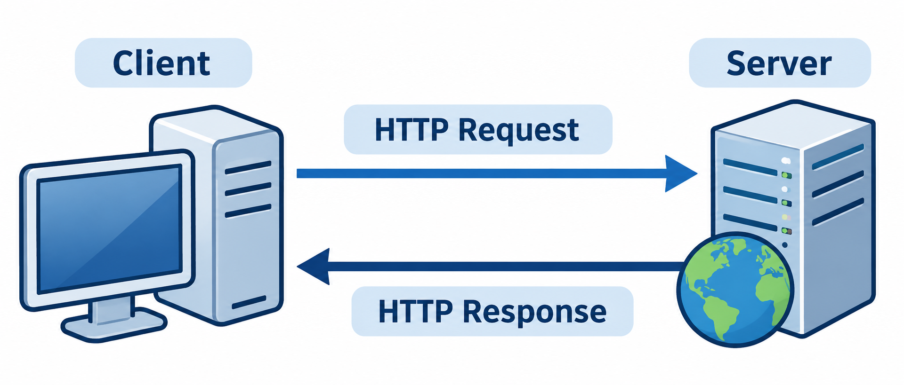

What is HTTP?
HTTP stands for Hypertext Transfer Protocol. It is an application-layer protocol that allows web browsers and web servers to communicate. When a user visits a website, HTTP is used to request and deliver web resources.
The Request and Response Process
HTTP follows a request-response model. A client sends a request to a server, and the server sends back a response.
- A user enters a website address in a browser.
- The browser sends an HTTP request to the server.
- The server processes the request.
- The server returns an HTTP response.
- The browser displays the website content.
HTTP Communication Diagram
Client (Browser) → HTTP Request → Server
Client (Browser) ← HTTP Response ← Server
HTTP Request and Response Diagram
The diagram below shows how a client and server communicate using HTTP. The client sends an HTTP request to the server, and the server sends an HTTP response back to the client.

Figure 1: HTTP request and response communication.
Common HTTP Methods
HTTP methods describe the action a client wants the server to perform.
| Method | Purpose |
|---|---|
| GET | Retrieves information from a server. |
| POST | Sends data to a server for processing. |
| PUT | Creates or replaces a resource. |
| DELETE | Requests removal of a resource. |
Common HTTP Status Codes
HTTP status codes are three-digit numbers returned by a server to indicate the result of a request. These codes help browsers and developers understand whether a request was successful or encountered an error.
| Status Code | Meaning |
|---|---|
| 200 | OK - The request was successful. |
| 301 | Moved Permanently - The resource has a new URL. |
| 404 | Not Found - The resource could not be found. |
| 500 | Internal Server Error - The server encountered a problem. |